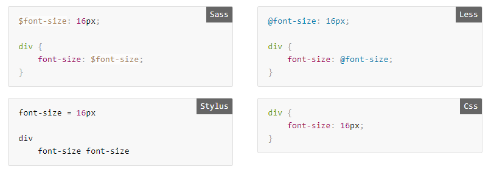

Agenda
- Preprocessors
- Magic and preprocessors
- Preprocessor in wild nature
- Dominant Species
- What is the difference...
- PostCss Rex
- Native CSS feature
- FAQ
CSS preprocessor?
CSS preprocessor, meaning that it extends the CSS language, adding features that allow variables, mixins, functions and many other techniques that allow you to make CSS that is more maintainable, themable and extendable.
Main goal: make our life simple

Dark magic of preprocessors
Less(!) magic...

Truth is out there

3 top CSS-Preprocessors

SASS
2007

LESS
2009
Stylus
2010

Pie of power (2016 год)

Which shoul I choose?
You know...
they are...
all good!
What the difference?
80/20
80% possibility SASS, LESS и Stylus equal,
20% difference.
Usage
How to install?

#1 Console!
- Sass
npm install -g sass sass source/stylesheets/index.scss build/stylesheets/index.css - Less
npm install -g less lessc styles.less styles.css - Stylus
npm install -g stylus stylus -w style.styl -o style.css
#2
Grunt, Gulp, Webpack ...


#3
Online
- CodePen
- JSFiddle
- Plunker
- ...
Syntax
-
LESS и SCSS
-
SASS
-
Stylus
body {
background-color: #efefef;
font-size: 100% Helvetica, sans-serif;
}
body
background-color: #efefef
font-size: 100% Helvetica, sans-serif
body
background-color #efefef
font-size 100% Helvetica, sans-serif
Stylus can use all 3 types
Similar:
- Variables
- Nesting
- Imports
- Calculations
- Mixins
- Color
- If/else...
Variables
Nesting

@import

Calculations

Mixins

Extend

Loops

@extend + Placeholder
SCSS
%borders {
border: 1px solid #efefef;
padding: 10px;
}
p {
@extend %borders;
font-size: 20px;
}
ul, ol {
@extend %borders;
text-transform: uppercase;
}
Stylus
%borders
border 1px solid #efefef
padding 10px
p
@extend %borders
font-size 20px
ul, ol
@extend %borders
text-transform uppercase
SCSS
%borders {
border: 1px solid #efefef;
padding: 10px;
}
p {
@extend %borders;
font-size: 20px;
}
ul, ol {
@extend %borders;
text-transform: uppercase;
}Stylus
%borders
border 1px solid #efefef
padding 10px
p
@extend %borders
font-size 20px
ul, ol
@extend %borders
text-transform uppercase
Functions
SCSS
$grid-columns: 12;
$grid-width: 960px;
@function calculate-column-width($cols) {
@return $grid-width / $grid-columns * $cols / $grid-width * 100%
}
#container {
margin: 0 auto;
width: 100%;
}
article {
float: left;
width: calculate-column-width(8);
}
aside {
float: right;
width: calculate-column-width(4);
}
LESS
@grid-columns: 12;
@grid-width: 960px;
.calculate-column-width(@cols) {
width: (((@grid-width / @grid-columns) * @cols / @grid-width) * 100%);
}
#container {
margin: 0 auto;
width: 100%;
}
article {
float: left;
.calculate-column-width(8);
}
aside {
float: right;
.calculate-column-width(4);
}
Stylus
grid-columns 12
grid-width 960px
calculate-column-width(cols)
((grid-width / grid-columns) * cols / grid-width) * 100%)
#container
margin 0 auto
width 100%
article
float left
width calculate-column-width(8)
aside
float right
width calculate-column-width(4)
Color

@content – Sass
=respond-to($name)
@if $name == small-screen
@media (min-width: 320px)
@content
@if $name == large-screen
@media (min-width: 960px)
@content
aside
width: 25%
+respond-to(small-screen)
width: 100%
@content – Scss
@mixin respond-to($name) {
@if $name == small-screen {
@media (min-width: 320px) {
@content;
}
}
@if $name == large-screen {
@media (min-width: 960px) {
@content;
}
}
}
aside {
width: 25%;
@include respond-to(small-screen) {
width: 100%;
}
}
Cons of preprocessoes
Your code can not be run in the browser without processing
.accordion {
$accordion-header-color: $primary-color;
$accordion-padding: 1em;
@extend %module;
@include transition(all 0.3s ease-out);
background: $accordion-header-color;
padding: $accordion-padding;
}
Sometime they make all complicated...
&__moon{
& .forecast-extra-info__logo {
background: url('../img/moon_states.png') no-repeat;
}
@for $i from 0 through 30 {
&_#{$i} .forecast-extra-info__logo {
background-position: $i*(-58px) 0;
}
}
}
PostCSS

PostCSS
с 2013

How PostCSS work?
What can I do with PostCSS?
- Polyfills
- Older browsers Support
- Extantions
- Optimization
- Syntax sugar
- Analitics
more then 90 plugins
- Autoprefixer (adds vendor prefixes to CSS rules where it’s necessary)
- CSSnext (allows you to use future CSS syntax on current sites)
- PreCSS (take advantage of a Sass-like markup in your sytlesheet files)
- StyleLint (proofreads and validates your CSS code)
- CSSNano (optimized and minified CSS files for a production site)

You can create plugins by yourself!
module.exports = postcss.plugin('postcss-carl', function (opts) {
return function (css, result) {
css.walkRules(function(rule) {
rule.selector = rule.selector + ', CARL';
});
};
});
Usage
Gulp
var postcss = require('postcss');
postcss([
require('autoprefixer'),
require('stylelint')({
syntax: 'scss'
})
])
.process(css)
.then(result => console.log(result.css))
Webpack
module.exports = {
module: {
loaders: [{
test: /\.css$/,
use: ExtractTextPlugin.extract({
use: [{
loader: 'css-loader',
options: { importLoaders: 1 },
},
'postcss-loader'
]}),
}]},
plugins: {
'postcss-import': {},
'postcss-cssnext': {
browsers: ['last 2 versions', '> 5%'],
}},
};
Not enough?..

Combo!

CSS have a power!
- Variables
- Calculations
- Imports
- Mixins
- Nesting
- Extend
- Colors
CSS Variables
div {
--main-bg-color: brown;
}
div {
background-color: var(--main-bg-color);
}
Calculations
input {
padding: 2px;
display: block;
width: 98%;
width: calc(100% - 1em);
}
#formbox {
width: 130px;
width: calc(100% / 6);
border: 1px solid black;
padding: 4px;
}
Imports
@import url("fineprint.css") print;
@import url("bluish.css") speech;
@import 'custom.css';
@import url("chrome://communicator/skin/");
@import "common.css" screen;
Mixin
:root {
--my-mixin: {
background: #256dbd;
color: #f5f5f5;
}
}
body {
@apply --my-mixin;
}
Nesting
nav {
color: #222;
&.primary {
background: maroon;
}
}
Extend
.message {
border: 1px solid #ccc;
padding: 10px;
color: #333;
}
.success {
@extend .message;
border-color: green;
}
Color-mod
nav {
background: color-mod(#79d3e2 hue(360) saturation(100%));
}
It's all falks!
Links:
FAQ?
-
EPAM Systems
-
Mariia Tarasiuk
- Mariia_Tarasiuk@epam.com